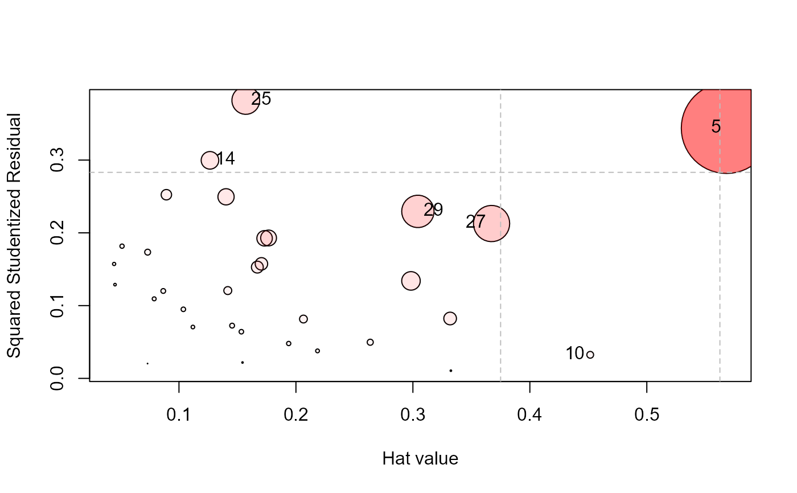

Influence Measures and Diagnostic Plots for Multivariate Linear Models
Source:R/mvinfluence-package.R
mvinfluence.RdFunctions in this package compute regression deletion diagnostics for multivariate linear models following methods proposed by Barrett & Ling (1992) and provide some associated diagnostic plots.
Details
The design goal for this package is that, as an extension of standard methods for univariate linear models, you should be able to fit a linear model with a multivariate response,
and then get useful diagnostics and plots with
The diagnostic measures include hat-values (leverages), generalized Cook's distance and generalized squared 'studentized' residuals. Several types of plots to detect influential observations are provided.
In addition, the functions provide diagnostics for deletion of subsets of observations
of size m>1. This case is theoretically interesting because sometimes pairs (m=2)
of influential observations can mask each other, sometimes they can have joint influence
far exceeding their individual effects, as well as other interesting phenomena described
by Lawrence (1995). Associated methods for the case m>1 are still under development in this package.
The main function in the package is the S3 method, influence.mlm, a simple wrapper for
mlm.influence, which does the actual computations.
This design was dictated by that used in the stats package, which provides
the generic method influence and methods
influence.lm and influence.glm. The car package extends this to include
influence.lme for models fit by lme.
The following sections describe the notation and measures used in the calculations.
Notation
Let \(\mathbf{X}\) be the model matrix in the multivariate linear model, \(\mathbf{Y}_{n \times p} = \mathbf{X}_{n \times r} \boldsymbol{\beta}_{r \times p} + \mathbf{E}_{n \times p}\). The usual least squares estimate of \(\boldsymbol{\beta}\) is given by \(\mathbf{B} = (\mathbf{X}^{T} \mathbf{X})^{-1} \mathbf{X}^{T} \mathbf{Y}\).
Then let
\(\mathbf{X}_I\) be the submatrix of \(\mathbf{X}\) whose \(m\) rows are indexed by \(I\),
\(\mathbf{X}_{(-I)}\) is the complement, the submatrix of \(\mathbf{X}\) with the \(m\) rows in \(I\) deleted,
Matrices \(\mathbf{Y}_I\), \(\mathbf{Y}_{(-I)}\) are defined similarly.
In the calculation of regression coefficients, \(\mathbf{B}_{(-I)} = (\mathbf{X}_{(-I)}^{T} \mathbf{X}_{(-I)})^{-1} \mathbf{X}_{(-I)}^{T} \mathbf{Y}_{I}\) are the estimated coefficients when the cases indexed by \(I\) have been removed. The corresponding residuals are \(\mathbf{E}_{(-I)} = \mathbf{Y}_{(-I)} - \mathbf{X}_{(-I)} \mathbf{B}_{(-I)}\).
Measures
The influence measures defined by Barrett & Ling (1992) are functions of two matrices \(\mathbf{H}_I\) and \(\mathbf{Q}_I\) defined as follows:
For the full data set, the “hat matrix”, \(\mathbf{H}\), is given by \(\mathbf{H} = \mathbf{X} (\mathbf{X}^{T} \mathbf{X})^{-1} \mathbf{X}^{T} \),
\(\mathbf{H}_I\) is \(m \times m\) the submatrix of \(\mathbf{H}\) corresponding to the index set \(I\), \(\mathbf{H}_I = \mathbf{X} (\mathbf{X}_I^{T} \mathbf{X}_I)^{-1} \mathbf{X}^{T} \),
\(\mathbf{Q}\) is the analog of \(\mathbf{H}\) defined for the residual matrix \(\mathbf{E}\), that is, \(\mathbf{Q} = \mathbf{E} (\mathbf{E}^{T} \mathbf{E})^{-1} \mathbf{E}^{T} \), with corresponding submatrix \(\mathbf{Q}_I = \mathbf{E} (\mathbf{E}_I^{T} \mathbf{E}_I)^{-1} \mathbf{E}^{T} \),
Cook's distance
In these terms, Cook's distance is defined for a univariate response by $$D_I = (\mathbf{b} - \mathbf{b}_{(-I)})^T (\mathbf{X}^T \mathbf{X}) (\mathbf{b} - \mathbf{b}_{(-I)}) / p s^2 \; ,$$ a measure of the squared distance between the coefficients \(\mathbf{b}\) for the full data set and those \(\mathbf{b}_{(-I)}\) obtained when the cases in \(I\) are deleted.
In the multivariate case, Cook's distance is obtained by replacing the vector of coefficients \(\mathbf{b}\) by \(\mathrm{vec} (\mathbf{B})\), the result of stringing out the coefficients for all responses in a single \(n \times p\)-length vector. $$D_I = \frac{1}{p} [\mathrm{vec} (\mathbf{B} - \mathbf{B}_{(-I)})]^T (S_{-1} \otimes \mathbf{X}^T \mathbf{X}) \mathrm{vec} (\mathbf{B} - \mathbf{B}_{(-I)}) \; ,$$ where \(\otimes\) is the Kronecker (direct) product and \(\mathbf{S} = \mathbf{E}^T \mathbf{E} / (n-p)\) is the covariance matrix of the residuals.
Leverage and residual components
For a univariate response, and when m = 1, Cook's distance can be re-written as a product of leverage and residual components as
$$D_i = \left(\frac{n-p}{p} \right) \frac{h_{ii}}{(1 - h_{ii})^2 q_{ii} } \;.$$
Then we can define a leverage component \(L_i\) and residual component \(R_i\) as
$$L_i = \frac{h_{ii}}{1 - h_{ii}} \quad\quad R_i = \frac{q_{ii}}{1 - h_{ii}} \;.$$ \(R_i\) is the studentized residual, and \(D_i \propto L_i \times R_i\).
In the general, multivariate case there are analogous matrix expressions for \(\mathbf{L}\) and \(\mathbf{R}\).
When m > 1, the quantities \(\mathbf{H}_I\), \(\mathbf{Q}_I\), \(\mathbf{L}_I\), and
\(\mathbf{R}_I\) are \(m \times m\) matrices. Where scalar quantities are needed, the package functions apply
a function, FUN, either det() or tr() to calculate a measure of “size”, as in
Other measures
The stats-package provides a collection of other leave-one-out deletion diagnostics that work with
multivariate response models.
rstandardStandardized residuals, re-scaling the residuals to have unit variance
rstudentStudentized residuals, re-scaling the residuals to have leave-one-out variance
dfitsa scaled measure of the change in the predicted value for the ith observation
covratiothe change in the determinant of the covariance matrix of the estimates by deleting the ith observation
References
Barrett, B. E. and Ling, R. F. (1992). General Classes of Influence Measures for Multivariate Regression. Journal of the American Statistical Association, 87(417), 184-191.
Barrett, B. E. (2003). Understanding Influence in Multivariate Regression. Communications in Statistics – Theory and Methods, 32, 3, 667-680.
A. J. Lawrence (1995). Deletion Influence and Masking in Regression. Journal of the Royal Statistical Society. Series B (Methodological) , 57, 1, 181-189.
Author
Maintainer: Michael Friendly friendly@yorku.ca (ORCID)
Examples
data(Rohwer, package="heplots")
Rohwer2 <- subset(Rohwer, subset=group==2)
rownames(Rohwer2)<- 1:nrow(Rohwer2)
Rohwer.mod <- lm(cbind(SAT, PPVT, Raven) ~ n+s+ns+na+ss, data=Rohwer2)
influencePlot(Rohwer.mod, id.n = 3)

#> H Q CookD L R
#> 5 0.5682146 0.34387765 0.84671734 1.3159654 0.7964087
#> 10 0.4516115 0.03239271 0.06339198 0.8235248 0.0590689
#> 14 0.1264993 0.29967992 0.16427359 0.1448187 0.3430792
#> 25 0.1571260 0.38198170 0.26008352 0.1864170 0.4531896
#> 27 0.3672647 0.21279661 0.33866160 0.5804397 0.3363122
#> 29 0.3042700 0.22949988 0.30259634 0.4373392 0.3298692